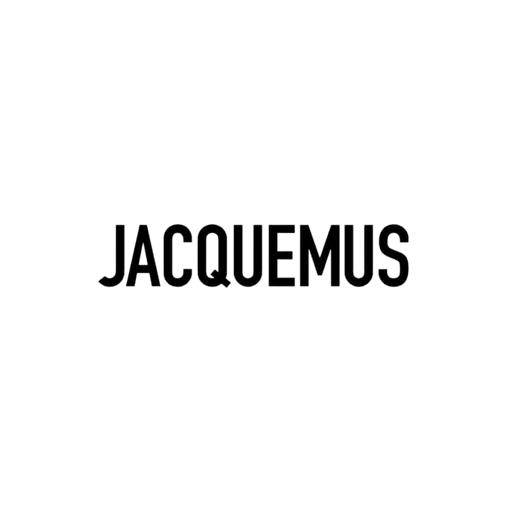

the accountability initiative
the good
Fashion has to make sense without forgetting the human side to it.
It’s not about doing a good collection or a beautiful show, but how to share values with the audience, how to pass along a positive message.
Over the course of the last 12 months, the conversation around a more diverse, sustainable, and inclusive fashion has continued to evolve.
What was once seen as a fringe concern is now at the heart of conversations at all levels of the industry, whether it’s fast fashion companies, major luxury houses releasing mission statements, or small labels and designers offering a new path for the industry.
Against this backdrop, innovative new brand initiatives, circular systems and a wider focus on responsibility are all being launched.
Equally, more and more brands are adopting responsible supply chains, and the global coronavirus pandemic has broken traditional cycles of consumption and destruction.

the bad
Fashion currently faces a reckoning when it comes to dismantling the systematic discrimination and racism that underpins the industry on a fundamental level.
Although there are brands commited to making real changes and are innovative in their approach to inclusive and ecological business practices, a vast majority of the industry has not really changed.
As seen with the neverending string of accusations and allegations, brands have no real incentive to behave and act responsibly.
Moreover, the majority of fashion publications and prominent figures in the industry are still unwilling or too afraid to hold much-needed conversations
about cultural appropriation, sexual harassment, and gaslighting when brands with clout are at the center of a scandal.
Not to worry — time is running out for money, fame, and celebrity clout to excuse brands and individuals from acknowledging and implementing accountability.

resources
stay up to date with industry news and issues
@diet_prada
disclosing disruptive commentary on a wide range of industry issues — racial discrimination, cultural appropriation, model abuse, and more
re: wangover
@shitmodelmgmtbreaking down the stigma of the fashion industry being all glitz and glamour + documenting the reality of discrimination and racism
re: the blacklist